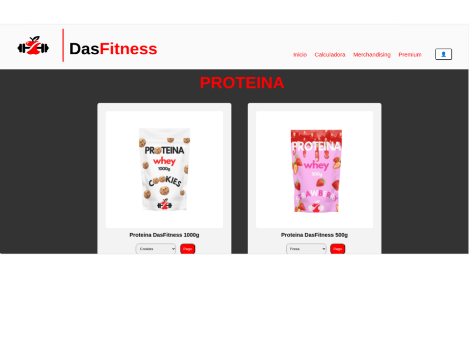

Presentació del projecte
De què tracta?
Erem una empresa anomenada DAS FITNESS, la qual teniem una web anomenada igual, el nostre objectiu de la web era que els usuaris poguessin comprar productes de fitness i també poder contractar els nostres serveis d'exercicis adequats per a cada múscul.
Funcions i estructures

Teníem diferents pàgines les quals cada una es dedicava a una cosa diferent.
Teniem una pagina de calculadora on els usuaris es podien calcular el pes, grams de proteina necessaris, teniem una altre pàgina on recomanavem diferents exercicis a tràves d'un cos huma, clicaves al múscul que volies treballar i t'enviava directament a una pàgina només d'aquell múscul, una altra pàgina de nutrició i consells, una de merxabdatge i una de productes com la proteina i creatina.
Pàgina Productes de nutrició

Per a més informació visita la memòria del nostre projecte:
DasFitness